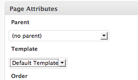

To achieve a unique look for your homepage,
you can create a file called front-page.php.
This template is used when we want to create a unique looking home page with a series of content areas funneling visitors to various sections of our site.
You can target specific pages, by making new templates and using the slug or the id of the page.
- page-id.php
- page-slug.php
This is good practice if you are going to use a unique feature only once.
For example, you may want to use apage-contact.php to display a google map.
You may also want to create unique layout for a specific category.
- category-id.php
- category-slug.php
WordPress offers a huge selection of templates and these follow a specific hierarchy.
Custom templates can be created by adding a comment at the top of a new file.
<?php /* Template Name: The name of your template goes here */ ?>
Custom templates are used when you want to let clients decide what template to use. For example, you may wish to provide a page.php which has a sidebar and a custom template with no sidebar.
Once you've created your custom template and saved it, you will notice a dropdown in your page admin.

This dropdown allows you to select this template for whatever page you choose.
The Loop is PHP code used by WordPress to display posts.
You loop displays information using the appropriate Template Tags.
Examples of template tags are:
the_title();the_content();the_excerpt();the_permalink(); This loop uses the the default query to loop through post content, making it the loop used 99% of the time.
<?php if (have_posts()) : while (have_posts()) : the_post(); ?>
<div <?php post_class(); ?> id="post-<?php the_ID(); ?>">
<h2><a href="<?php the_permalink(); ?>"><?php the_title(); ?>
</a></h2>
<?php the_content(); ?>
</div>
<?php endwhile; endif; ?>
WP Query offers you complete control over the customization of any number of loop.
The following loop will exclude category 9.
<?php $custom_query = new WP_Query('cat=-9');
while($custom_query->have_posts()) : $custom_query->the_post(); ?>
<div <?php post_class(); ?> id="post-<?php the_ID(); ?>">
<h2><a href="<?php the_permalink(); ?>"><?php the_title(); ?>
</a></h2>
<?php the_content(); ?>
</div>
<?php endwhile; ?>
<?php wp_reset_postdata(); // reset the query ?>
If you want to display more than one content area on a page, WP_Query() is very useful.
<?php
$new_query_1 = new WP_Query();
$new_query_1->query(array('page_id' => 2));
while ($new_query_1->have_posts()) : $new_query_1->the_post();
the_content();
endwhile;
wp_reset_query();
?>
The easiest, safest way to create multiple loops in your theme is to use get_posts().
<?php
$news = get_posts( array('numberposts' => 3, 'category' => 1) );
if ( $news ) {
foreach( (array) $news as $post ) {
setup_postdata( $post ); ?>
<p><a href="<?php the_permalink(); ?>"><?php the_title(); ?></a></p>
<?php }
}
wp_reset_postdata();?>
Many tutorials will tell you that it's ok to use query_post() but please DON'T.
front-page.php in the left and right columns. Use the Photoshop file as your guide for styling.WordPress gives us the ability to alter or hook onto core WordPress functions without hacking core.
There are two major tools that are considered hooks:
Filters take specific data and allows you to modify it then returns the data.
Actions allow you to run a function at a specific point in the flow of the code.
Simple example of data.
$taco = 'chicken';
The taco is chicken.
$taco = apply_filters( 'get_taco', 'chicken' );
function my_special_order( $content ) {
return 'shredded beef';
}
add_filter( 'get_taco', 'my_special_order' );
Taco is now shredded beef.
Change the number of characters in a WordPress excerpt.
By default the excerpt length is set to return 55 words.
function custom_excerpt_length( $length ) {
return 20;
}
add_filter( 'excerpt_length', 'custom_excerpt_length' );
In your header.php file you see this function.
<?php wp_head(); ?>
Load a custom script in the head
add_action('wp_head', 'custom_theme_favicon');
function custom_theme_favicon() {
echo '<link rel="icon" type="image/png" href="path/to/favicon/file">';
}
This will load a favicon in the header.
Filters and actions can have multiple
functions applied to them.
function custom_excerpt_length_long( $length ) {
return 40;
}
function custom_excerpt_length_short( $length ) {
return 20;
}
//both filters will be applied.
// this filter will be applied first.
add_filter( 'excerpt_length', 'custom_excerpt_length_long' );
// this filter will be applied last.
add_filter( 'excerpt_length', 'custom_excerpt_length_short', 100 );
What will the excerpt length be?
The best way to include jQuery is to enqueue it.
wp_enqueue_script( $handle, $src, $deps, $ver, $in_footer );<?php
function my_scripts_method() {
wp_enqueue_script( 'scriptaculous' );
wp_enqueue_script( 'jquery' );
}
add_action( 'wp_enqueue_scripts', 'my_scripts_method' );
?>
WordPress is distributed with default scripts already included.
In order to use jQuery with WordPress, the noConflict Wrapper must be used.
Use:
jQuery(document).ready(function(){
jQuery(#somefunction) ...
});Instead of:
$(document).ready(function(){
$(#somefunction) ...
});